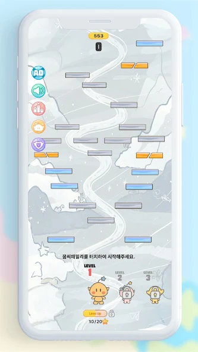
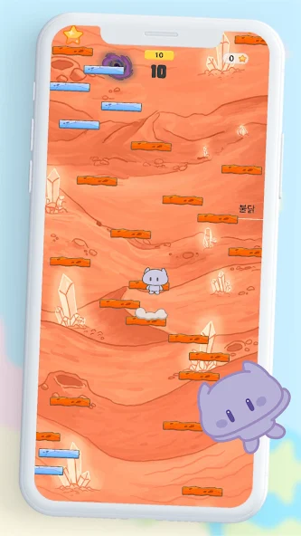
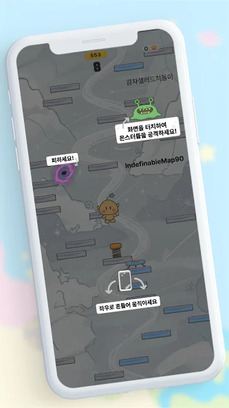
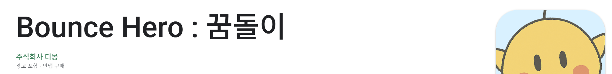
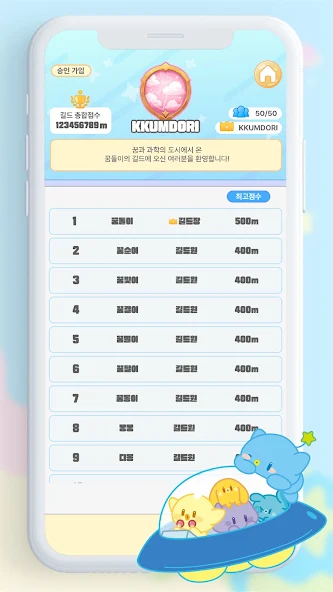
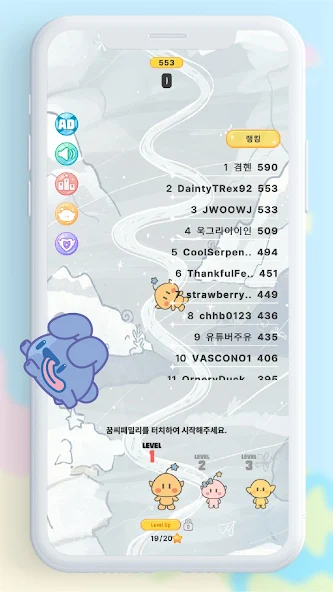
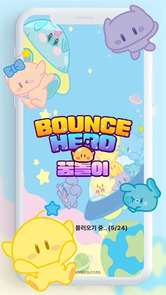
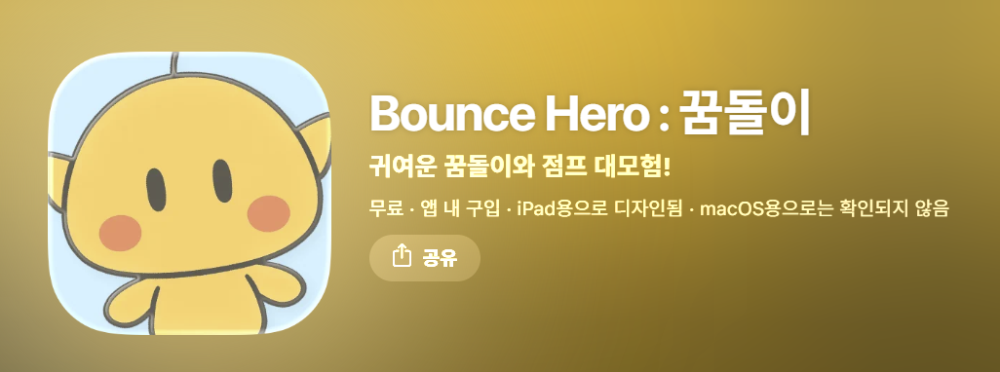
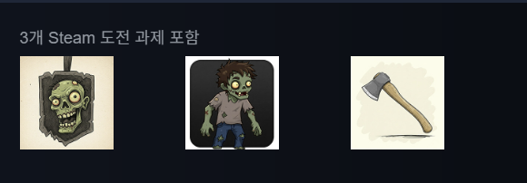

Bounce Hero : 꿈돌이
대전관광공사 마스코트를 주인공으로 한 모바일 점프 게임입니다. Google Play와 App Store 양쪽에 출시했고, 라이브 운영까지 참여했습니다.
- 장르
- 모바일 점프 액션 (무한 스크롤)
- 엔진 · 언어
- Unity · C#
- 소속 · 규모
- 주식회사 디몽 인턴 · 사수와 2인 개발
- 담당
- 클라이언트 개발 · 2025.03 ~ 06
어떤 게임인가
대전관광공사의 마스코트 꿈돌이가 몬스터를 피해 발판을 밟고 위로 올라가는 캐주얼 점프 게임입니다. 수성부터 해왕성까지 행성 8스테이지와 히든 맵이 있고, 스테이지마다 발판 리소스가 다릅니다. 대전관광공사와 협업한 프로젝트라 오프라인 축제 현장에서도 시연하며 현장 피드백을 받을 수 있었습니다.
사수와 함께 처음부터 만든 게임입니다. 발판 생성기 · 난이도 곡선 · 오브젝트 풀 · 인앱 결제 · 길드 · 랭킹은 제가 만들고 실제 라이브 운영을 하며 피드백을 받아 고쳤습니다.
기획이 정해진 상태에서 코드를 얹은 것이 아니라 애자일하게 만들면서 문제를 발견하고 구조를 바꿔가며 완성했습니다. 실제 이용자에게 나간 제품을 처음부터 끝까지 겪은 경험입니다.

끝없이 이어지는 발판 생성
구현
- 카메라
orthographicSize와aspect로 화면 폭을 런타임에 계산해, 기기 해상도가 달라도 같은 밀도로 깔리게 했습니다. - 카메라가 임계선을 넘을 때마다 발판들을 생성하고, 임계선을 반 화면만큼 올립니다. 생성 지점이 카메라에서 한 화면 넘게 앞서가 있으면 건너뜁니다.
- 회수는 스포너가 아니라 발판 자신이 판단합니다. 카메라보다 아래이고 반 화면 이상 멀어진 순간 풀로 돌아갑니다.
- 아이템과 적은 발판 위에 생성되고
Physics2D.OverlapCircleAll로 겹침을 먼저 확인해 아이템/적이 겹치면 적을 풀로 되돌립니다.
화면
// PlatformSpawner — 언제 더 깔지 (의사코드) 매 프레임: if 카메라가 다음 임계선을 넘었다 and 마지막 생성 지점이 카메라에서 한 화면 안이다: SpawnPlatforms() // 한 뭉치를 위에 깐다 임계선 += 반 화면 // 다음 임계선을 올린다 // SpawnPlatforms() — 한 뭉치 안에서 반복 (뭉치 개수만큼): 종류 = 확률표에서 뽑는다 x = 화면 폭 안에서 무작위 y += 간격 // 위로 쌓아 올린다 발판 = 풀에서 꺼내 그 자리에 놓는다 if 종류가 일반 발판이면: 아이템 또는 적을 얹어 본다 단, 겹치면 취소하고 풀로 되돌린다 // Platform.RemovePlatform() — 언제 사라질지 if 내가 카메라보다 위에 있다: return // 위쪽은 건드리지 않는다 if 카메라와의 거리 >= 반 화면: ObjectPool.ReturnPlatform(나 자신)

성과
점수에 따라 올라가는 난이도 곡선
구현
- 현재 점수를 일정 단위로 잘라 티어로 만들고, 티어마다 발판 종류의 등장 확률표를 따로 뒀습니다. 초반에는 기본 발판 위주로, 후반에는 7종이 전부 나옵니다.
- 같은 티어 값으로 한번에 등장하는 발판 개수를 줄이고, 세로 간격을 네 배까지 벌립니다. 실제 배치는 그 값의 ±20%로 흔들어 규칙성을 지웠습니다.
- 적은 중반 티어에 진입해야 나옵니다. 아이템이 놓인 발판에는 적을 얹지 않아 보상과 위협이 겹치지 않게 했습니다.
- 난이도를 결정하는 값(티어 단위 · 간격 증가폭 · 간격 상한 · 적 등장 주기)은 전부 인스펙터에 노출해, 기획자가 밸런스를 고칠 때 코드를 건드리지 않게 했습니다.
화면
// 고치기 전 — 점수와 무관한 고정 확률 7종을 처음부터 거의 균등하게 뽑았다 → 기본 발판이 2할뿐, 시작하자마자 부서지는 발판이 쏟아진다 // GetRandomPlatformType() — 티어가 오르면 종류가 하나씩 열린다 tier = 점수 / 티어단위 tier 0 기본 · 좌우이동 기본 발판이 대부분 tier 1 + 상하이동 tier 2 + 부서지는 발판 tier 3 + 일회용 발판 tier 4~ + 밟으면이동 · 색변화 소멸 기본 발판이 절반 아래로 // SpawnPlatforms() — 같은 tier가 개수와 간격도 함께 움직인다 degree = min(tier, 상한) // 뭉치 개수를 줄인다 distance = min(기본간격 + 증가폭 * degree, 상한) 배치 = distance * Random(0.8, 1.2) // 규칙성 지우기 적 등장 = degree가 중반 이상 && 뭉치 n회마다 1마리
티어 하나에 모아 종류·개수·간격·적을 동시에 움직입니다. 한 값만 고쳐도 곡선 전체가 따라옵니다.

성과
타입별 오브젝트 풀과 재사용 상태 초기화
무한 스크롤 게임이라 생성·파괴가 끝없이 반복됩니다. 그렇기에 오브젝트 풀링을 사용하기로 마음먹었습니다.
구현
- 발판 7종 · 아이템 · 적을 타입별 배열 풀로 나누고, 종류마다 초기 크기를 따로 잡았습니다. 각 종류를 미리 만들어 꺼두었다가 켜고 끄는 방식으로 바꿨습니다.
- 풀이 비면 그때 1개씩 새로 만들어 풀에 넣습니다. 덕분에 풀이 바닥나도 발판이 안 나오거나 스포너가 실패하지 않지만, 그 순간에는 생성 비용이 그대로 듭니다. 그래서 초기 크기를 발판 종류당 100개로 넉넉히 잡아 실사용에서는 이 경로를 탈 일이 거의 없게끔 구현했습니다.
- 스테이지 테마별로 같은 프리팹에 다른 스프라이트를 물려, 발판 종류 × 테마 수만큼 프리팹을 만들지 않게 했습니다.
- 재사용 시점을 명시적 초기화 지점으로 두고 색 · 이동 상태 · 자식 오브젝트를 전부 그 자리에서 되돌립니다.
- 빌드 대상은 Android 6.0(API 23) 이상입니다. 오래된 기기까지 들어오는 캐주얼 게임이라, 생성·파괴 비용을 줄이는 것이 최적화였습니다.
화면
// 고치기 전 — 구독 수명이 오브젝트 수명과 어긋난다 Start() : 전체이동 이벤트를 한 번만 구독 ReturnPlatform() : 비활성화만 한다 → 구독은 그대로 남음 씬 재로드 → 죽은 발판이 계속 신호를 받음 // 고친 뒤 — 풀의 생명주기에 구독을 맞춘다 OnEnable() : 풀에서 꺼낼 때 구독 + 붙어 있던 자식 정리 OnDisable() : 풀로 돌아갈 때 구독 해제 + 이동 상태 복구 ReturnPlatform() : 색 복구 → 비활성화 MovePlatform() : 이동중 아님 and 활성 상태일 때만 동작
구독 수명 교정Destroy는 구독한 이벤트를 없애지만
OnDisable은 없애지 않습니다. 그래서 풀의 생명주기에 구독을 맞추어서 Start에서 OnEnable/OnDisable로 옮겼습니다.
성과
인앱 결제 — 광고 제거 상품
두 스토어의 상품을 한 스크립트로 다루고, 구매 상태가 기기를 옮겨도 남게 만들었습니다.
구현
Unity IAP로 소모품 · 비소모품 · 구독 세 유형을 등록하고, 실제 판매 상품은 비소모품 ‘광고 제거’로 두었습니다.- 하나의 상품 정의에 스토어별 상품 ID를 매핑해, 코드 하나로 두 마켓을 처리하게 했습니다. 플랫폼 분기가 결제 흐름 전체로 번지지 않고 상품 등록 한 곳에만 남습니다.
- 구매 성공 시 광고 제거 플래그를 세우고 즉시 Firebase에 저장합니다. 기기가 아니라 계정에 붙는 값이라, 같은 계정으로 다시 들어오면 구매가 남아 있습니다.
- 애플 정책상 필수인 구매 복원 버튼을
IAppleExtensions.RestoreTransactions로 붙였습니다.
화면
// ProcessPurchase() — 스토어에 결과를 즉시 돌려줘야 하는 자리 구매 성공: 광고제거 플래그 = true 저장 요청 // await 불가 — 기다릴 수 없다 return Complete // 스토어에는 즉시 응답 // 처음: 저장을 async void 로 → 실패가 아무 데도 안 남음 // 고침: Task 반환 래퍼로 떼어내고 그 안에서 예외를 잡는다 SaveUserDataAsyncWrapper(): try : await 저장(유저키) catch : 저장 실패 로그 // 실패가 흔적을 남기는 경로 // 상품 정의 — 한 상품에 스토어별 ID를 매핑 AddProduct(광고제거, NonConsumable, { { <Google Play 상품 ID>, GooglePlay }, { <App Store 상품 ID>, AppleAppStore }, })
결제 처리 흐름 결제는 중요한 부분인 만큼 저장 시점 , 비동기 처리 , 영수증 확인 등 모든 과정을 확실하게 확인해야 했습니다.

IAP와 AdMob 연동이 실제로 심사를 통과했다는 결과입니다.성과
길드 시스템
여러 사람이 동시에 같은 길드를 건드릴 수 있기에 동시성 처리가 어려운 기능이었습니다.
구현
- 길드 생성 · 검색 · 가입 신청 · 수락/거절 · 강퇴 · 해체까지
수명 주기 전체를
Firebase Realtime Database위에 올렸습니다. - 가입 정책을 승인 가입 · 자유 가입 · 가입 불가 세 종류로 두고, 자유 가입은 신청과 수락을 한 흐름에서 이어 처리합니다.
- 가입 신청과 수락은
RunTransaction으로 처리합니다. 읽고 나서 쓰는 사이에 다른 사람이 끼어들어도 길드원 목록과 신청 목록이 어긋나지 않습니다. - 해체는
isDisbanding플래그를 먼저 세우고 길드원의 소속을 지운 뒤 마지막에 길드를 지웁니다. 해체 중에 들어온 가입 신청은 트랜잭션에서 중단됩니다. - 길드명은 Firebase 키 규칙(
. # $ [ ]불가)을 먼저 검사하고 넘깁니다.
화면
// 가입 수락 — 읽고 쓰는 사이를 열어두지 않는다 [사전 확인] 신청자가 이미 다른 길드에 속해 있는가 → 그렇다면 신청만 지우고 여기서 끝낸다 RunTransaction(길드): if 길드가 없다 or 해체 중이다: return Abort if 신청 목록에 이 사람이 없다: return Abort 길드원 목록에 추가 신청 목록에서 제거 return Success [성공한 뒤에만] 유저 쪽에 길드명을 적는다 // 순서를 뒤집으면 // 소속은 생겼는데 명단엔 없는 유령이 남는다 // 해체도 같은 원칙이다 // 해체 표시 → 길드원 소속 해제 → 길드 삭제
가입 처리 흐름확인과 반영 사이가 벌어지면 그 틈에 다른 요청이 끼어듭니다. 길드장 둘이 같은 신청을 동시에 수락하면 각자 “신청 목록에 있다”를 읽고 둘 다 추가해버리고, 수락 도중 길드가 해체되면 사라진 길드에 사람이 들어갑니다. 확인부터 반영까지를 트랜잭션 하나로 묶어 먼저 도달한 요청만 성공하고 나머지는 Abort되게 했습니다. 한 사람이 두 곳에 소속되는 것은 사전 확인으로 걸러내고, 길드 명단에 들어간 뒤에만 유저 쪽에 길드명을 적어 순서를 고정했습니다.

성과
스테이지별 랭킹
구현
- 기록을 스테이지 단위로 저장하고, 랭킹도 스테이지별로 따로 세웁니다. 행성 8스테이지가 각각 자기 순위표를 가집니다.
- 점수 내림차순으로 정렬해 상위 100개 점수까지 표시합니다. 동점자가 묶이므로 실제로 보이는 사람은 그보다 많을 수 있습니다.
- 동점자를 같은 등수로 묶습니다. 점수를 키로 두고 닉네임을 리스트로 매달아, 같은 점수면 같은 순위 아래에 나란히 들어갑니다.
- 랭킹이 쓰는 스테이지별 기록과, 길드 화면이 쓰는 길드원 통합 점수 기록으로 구분하였습니다.
화면
// 동점자를 같은 등수로 — 점수를 키로 쓴다 기록 = { 점수 → [닉네임, 닉네임, ...] } 정렬 = 기록.점수 내림차순 표시 = 정렬.상위 100 // 인원이 아니라 점수 100개 // 590 → 1명 // 553 → 1명 // 436 → 2명 ← 같은 등수로 나란히 들어간다 // 닉네임을 키로 뒀다면 // 동점을 따로 판별하는 코드가 필요했다 // 기록은 두 곳에 나눠 쌓인다 스테이지별 기록 → 랭킹 화면이 읽는다 전체 통합 기록 → 길드 화면이 읽는다 // 한 값으로 합치면 // "어느 판의 기록인가"가 사라진다
순위 구성점수를 키로 두어 동점 처리가 자동으로 되게끔 구현하였습니다.

성과
플랫폼 SDK 연동과 라이브 운영
인증 · 광고 · 버전 관리를 붙이고, 축제 현장에서 받은 피드백을 패치로 넣었습니다.
구현
Firebase Auth와Realtime Database로 계정 · 최고 기록 · 해금 상태를 처리했습니다.AdMob보상형 · 전면 광고를 붙이고, 전면 광고에 30~40초 쿨타임을 걸어 연속 노출로 플레이가 끊기지 않게 했습니다.Google Play Games와Game Center로그인을 연동하고, 연동이 안 된 기기에서도 게임이 진행되도록 예외 처리를 따로 넣었습니다.- 앱 시작 시 버전을 확인해 갱신을 유도하고, 리소스 로딩 진행도를 화면에 표시했습니다.
- 오프라인 축제 현장에서 수집한 피드백을 버그 수정과 난이도 밸런스 패치에 반영했습니다.
화면


성과
ZOMVIRUS — 기존 출시작 참여
무기 인벤토리 추가 & 스팀 도전과제 구현
구현
- 디몽이 2025년 2월에 이미 Steam에 출시한 PC VR 좀비 서바이벌 게임입니다. 제가 합류한 것은 그 뒤이며, 기능 추가와 리팩터링으로 참여했습니다.
- 게임 내 이벤트에 연동되는
Steam Achievement를 구현했습니다. - 무기 장착·인벤토리 레거시 코드를 파악해 무기 슬롯을 추가하며 리팩터링했습니다.
화면

성과
트러블슈팅
어려움
기능 03 — 타입별 오브젝트 풀과 재사용 상태 초기화
- 문제
- ‘밟으면 모든 발판이 함께 움직이는’ 발판이 씬을 다시 로드하면 고장났습니다. 검은 발판은 한 번 밟혀 색이 바뀌면 다음에 꺼냈을 때도 검은 채로 나왔습니다.
- 원인
- 발판끼리는
static이벤트로 신호를 주고받는데, 구독을Start에서 한 번만 했습니다. 풀링은 오브젝트를 지우는 게 아니라 꺼두는 것이라 구독도 색도 그대로 남습니다. 이전 씬의 죽은 발판이 계속 이벤트를 받고 있었습니다. - 해결
- 구독과 해제를 풀에서 꺼내고 넣는 순간(
OnEnable/OnDisable)에 맞추고, 반환 시 색과 이동 상태를 되돌렸습니다. 꺼낼 때 붙어 있던 아이템·적을 먼저 떼는 처리도 같은 자리에 넣었습니다. “지워지는 것에 기대던 처리”를 전부 재사용 지점으로 옮긴 것이 이 작업의 요지입니다.
어려움
기능 04 — 인앱 결제 — 광고 제거 상품
- 문제
- 구매 완료를 처리하는 함수 안에서 Firebase 저장을 기다릴 수 없었습니다. 저장을
async void로 두자, 저장이 실패해도 아무도 모르게 넘어갔습니다. 돈을 낸 유저의 광고 제거가 사라질 수 있었습니다. - 원인
ProcessPurchase는 스토어에 처리 결과를 즉시 돌려줘야 하는 함수라await를 걸 수 없습니다. 그렇다고async void로 만들면 예외가 호출자에게 전달되지 않아 실패가 조용히 삼켜집니다.- 해결
- 저장을
Task를 반환하는 별도 래퍼로 떼어내고 그 안에서try/catch로 실패를 잡아 로그를 남기게 했습니다. 스토어에는 결과를 바로 돌려주고, 저장은 실패해도 흔적이 남는 경로로 분리했습니다.
어려움
기능 05 — 길드 시스템 · 동시 수락 경합
- 문제
- 길드장 두 명이 같은 신청을 동시에 수락하면 한 사람이 길드원 목록에 두 번 들어갔습니다. 해체 중인 길드에 가입이 성사되기도 했습니다.
- 원인
- 여러 클라이언트가 같은 테이블을 동시에 건드릴 수 있어서, 각자 “신청 목록”을 읽은 뒤 둘 다 쓰면 나중 쓰기가 앞을 덮어썼습니다.
- 해결
- 읽기·검증·쓰기를
RunTransaction하나로 묶었습니다. 길드가 없거나isDisbanding이거나 신청 목록에 이미 없으면 Abort시켜, 먼저 도달한 요청만 성공하게 했습니다.
어려움
기능 05 — 길드 시스템 · 두 테이블의 정합성
- 문제
- 길드원 목록에는 없는데 유저 쪽에는 길드명이 남는 유령 소속이 생겼습니다. 이 유저는 다른 길드에 가입할 수도 없습니다. 이미 소속이 있다고 판정되기 때문입니다.
- 원인
- DB 구조상 길드 테이블에서 유저를 저장하고 유저 테이블에서 또 길드를 갖기 때문에 한쪽만 성공하면 문제가 생깁니다. 트랜잭션은 한쪽 테이블만 보호하므로 쓰기가 두 번으로 나뉩니다.
- 해결
- 쓰기 순서를 고정했습니다. 길드 명단에 들어간 뒤에만 유저 쪽에 길드명을 적습니다. 이러면 중간에 실패해도 유저는 ‘소속 없음’으로 남아 다시 가입할 길이 열려 있습니다. 뒤집으면 어디에도 못 가는 상태로 갇힙니다. 해체도 같은 원칙으로, 플래그를 먼저 세우고 지우는 일은 마지막에 했습니다.
어려움
함께 — ZOMVIRUS — 기존 출시작 참여
- 문제
- 무기 장착과 인벤토리가 이미 서비스 중인 코드였습니다. 무기 전용 슬롯을 하나 늘리는 일인데 어디를 건드려야 안전한지 알 수 없었습니다.
- 원인
- 제가 쓴 코드가 아니었고, 출시된 게임이라 기존 프레임워크를 고칠 수 없었습니다. 구조를 모른 채 고치면 기존 기능을 망가뜨릴 수 있었습니다.
- 해결
- 먼저 레거시 코드의 흐름을 파악하는 데 시간을 썼고, 그 위에서 슬롯을 추가하며 필요한 만큼만 리팩터링했습니다. 남이 만든 구조 위에서 확장하는 방식은 이후 프로젝트 배달왕 김족구에서도 같은 방식으로 이어졌습니다.